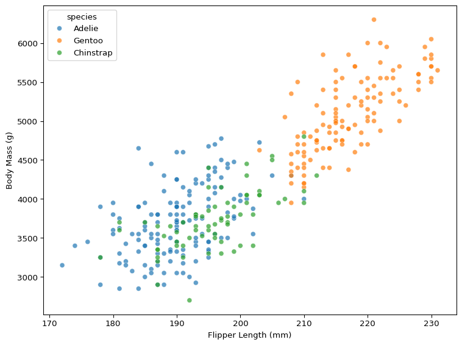
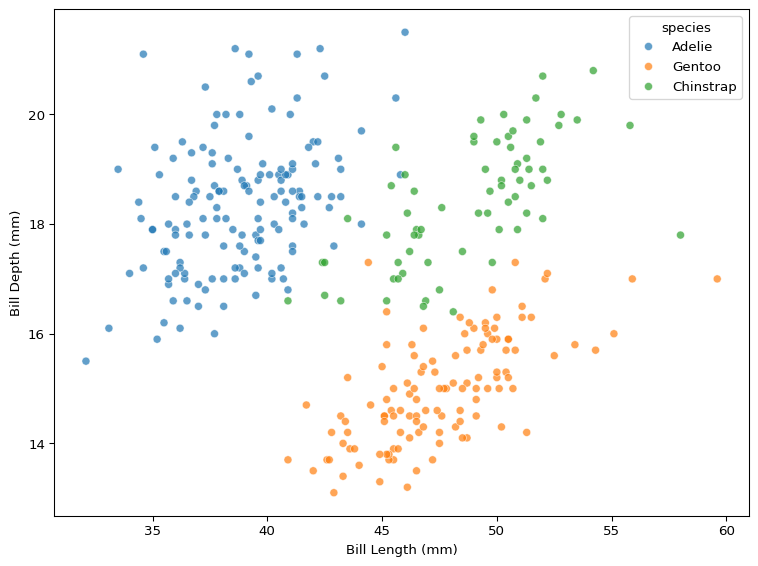
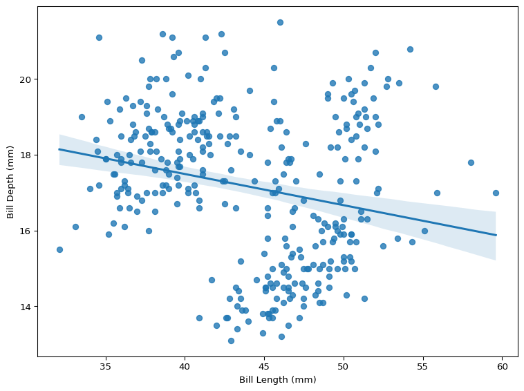

This is the second in our series of sessions that builds the regression foundations. Here we will look at how to explore relationships in data, using both quantitative measures such as correlation and a range of visualisations methods.
This session discusses what it means to analyse relationships between variables, what is possible with different types of variables (and how this links to the previous session that looked at comparing samples), and what these methods can and cannot tell us.
We will use the Palmer Penguins dataset throughout this session, taken from the TidyTuesday GitHub repository (originally from the palmerpenguins R package1). We will import the data directly from GitHub, but if you would prefer to download it instead, click here.
Why Analyse Relationships?
In the first session in the regression foundations series we considered how to compare samples, and what comparisons between groups can tell us. We compared fatalities from car crashes between 4/20 and other days. But what if we wanted to examine how the number of fatalities changes as temperature increases or decreases? Or maybe we want to account for the number of cars on the road at different times of year? These questions require different tools.
From Categorical to Continuous
The type of variables you are dealing with dictates what you can do to make inferences from your data. In our previous session, comparing samples, we were making comparisons by splitting our data into groups and comparing those groups. We compared the average number of car crash fatalities on 4/20 with the average number of car crash fatalities on all other days of the year. This is comparing the value of a continuous variable (fatalities) but split into categorical groups (4/20 and not 4/20). Here we will compare two continuous variables, considering how one variable (the outcome) changes in response to changes in the other variable (the predictor).
There is only a subtle difference between the idea of comparing samples and analysing relationships. You can frame a comparison between groups as analysing the relationship between the groups and the continuous variable, but you are still comparing the central tendency[^Central_Tendency] and dispersion2 for each group and inferring the relationship (or association) from this. When comparing two continuous variables, you can’t reduce either to their average, and are instead making statements about the way they vary together.
Variable Types
At this point, it might be necessary to walk through variable types and what continuous and categorical variables really mean.
Variable Type
Example Values
Typical Question
Continuous
5.2, 7.8, 102.3
How much?
Discrete
1, 2, 3, 10
How many?
Categorical (Nominal)
Red, Blue, Green
Which type?
Categorical (Ordinal)
Low, Medium, High
Which level?
Binary (Dichotomous)
Yes/No, Pass/Fail
Yes or no?
Time/Date
2025-06-10, 12:30 PM
When?
Identifier
ID12345, username987
Who or what? (unique)
A nominal category has no natural order, while ordinal categories do.
From Comparing Groups to Estimating Associations
Group comparison tells us whether Group A’s sample mean is meaningfully different from Group B’s, but this comparison doesn’t really tell us the size of the difference or the pattern in which the differences occur. If two samples are not drawn from the same population distribution, what does this really tell us? It is possible to structure our analysis such that this could be quite meaningful, but in many cases it won’t be.
This is why we need to take the next step, to analysing relationships. How do two variables move together? Strictly speaking, what we will be analysing today is less “relationships”, which implies causality, and more “associations”. We are unable to make claims about causality with the methods we are using, because we are only considering how variables vary together, and not directly estimating how one variable causes changes in another. Still, the methods we will discuss here get us one step closer to being able to measure effects and infer causality.
In this session, we’ll explore the penguins dataset to see how body mass relates to flipper length, how bill length relates to bill depth, and how to identify relationships between continuous traits.
Penguins with Long Characteristics
We will use the Palmer Penguins dataset to analyse how the length of penguins’ body mass changes with flipper length and how penguin bill length is associated with bill depth. We can’t draw conclusions about causality from our data, but we are able to move from identifying differences to quantifying those differences. This takes us one step closer to making meaningful inferences.
Import & Process Data
import pandas as pd# load penguins data from TidyTuesday URLurl ='https://raw.githubusercontent.com/rfordatascience/tidytuesday/main/data/2025/2025-04-15/penguins.csv'penguins_raw = pd.read_csv(url)penguins_raw.head()
species
island
bill_len
bill_dep
flipper_len
body_mass
sex
year
0
Adelie
Torgersen
39.1
18.7
181.0
3750.0
male
2007
1
Adelie
Torgersen
39.5
17.4
186.0
3800.0
female
2007
2
Adelie
Torgersen
40.3
18.0
195.0
3250.0
female
2007
3
Adelie
Torgersen
NaN
NaN
NaN
NaN
NaN
2007
4
Adelie
Torgersen
36.7
19.3
193.0
3450.0
female
2007
There are several missing values in this dataset. While we should generally be a little careful when discarding missing values, we will do so here just to simplify the process.
# drop missing valuesdf = penguins_raw.dropna()df.shape
(333, 8)
Visualing Relationships
Lets start by visualising how body mass varies by flipper length. We will split the data by species as well, in order to identify whether penguin species is a confounding factor.
import matplotlib.pyplot as pltimport seaborn as snsplt.rcParams['figure.figsize'] = [8,6]# scatter of flipper length vs. body masssns.scatterplot( data=df, x='flipper_len', y='body_mass', hue='species', alpha=0.7)plt.xlabel('Flipper Length (mm)')plt.ylabel('Body Mass (g)')plt.tight_layout()plt.show()

Figure 1: The Relationship Between Flipper Length & Body Mass
What patterns do you see in Figure 1? How does body mass change when flipper length increases? And how does species moderate the association between flipper length and body mass?
Figure 1 shows that, when flipper length increases, body mass appears to increase. There is a clear pattern in the data, and though there are differences in the average value of flipper length and body mass when split by species, the species doesn’t appear to have a significant impact on the relationship between flipper length and body mass.
We can use the same plot to visualise the association between bill length and bill depth.
# scatter of bill length vs. bill depthsns.scatterplot( data=df, x='bill_len', y='bill_dep', hue='species', alpha=0.7)plt.xlabel('Bill Length (mm)')plt.ylabel('Bill Depth (mm)')plt.tight_layout()plt.show()

Figure 2: The Relationship Between Bill Length & Bill Depth
How does the pattern in Figure 2 differ from Figure 1? What happens to bill depth when bill length changes, and how does species impact these changes?
When you look at all the data in Figure 2 without accounting for species, the relationship appears to be very noisy. However, when factoring in species differences, the association looks positive.
We can also fit a regression line to our data, shown below in Figure 3, which will show us the “line of best fit” through bill length and bill depth.
# add linear fit linesns.regplot( data=df, x='bill_len', y='bill_dep', scatter=True, ci=95)plt.xlabel('Bill Length (mm)')plt.ylabel('Bill Depth (mm)')plt.tight_layout()plt.show()

Figure 3: The Line of Best Fit Between Bill Length & Bill Depth
It is clear that any relationship between bill length and bill depth is more complicated than the relationship between flipper length and body mass. Not only does ignoring species make the association between these variables appear a lot more noisy, it also suggests that bill length is negatively associated with bill depth, which is the opposite conclusion to the conclusion we draw from Figure 2.
Computing Correlations
Visualising continuous variables using scatterplots can give us an indication of how two variables change together, but we are unable to quantify this association between two variables only using visualisations. We can put a number to what we are seeing in the plots by calculating the correlation between variables.
Pairwise Correlation
We can compute the correlation between two variables, using scipy.stats.
from scipy.stats import pearsonrr, p = pearsonr(df['flipper_len'], df['body_mass'])print(f"Correlation (r) = {r:.2f}")
Correlation (r) = 0.87
A correlation of 0.87 is very strong. There is clearly a very strong association between flipper length and body mass. However, we can’t claim that flipper length causes body mass just based off this. Correlation does not imply causation3.
When we visualised the relationship between bill length and bill depth, there appeared to be a grouping structure going on that complicated things, and the overall relationship appeared pretty noisy.
r, p = pearsonr(df['bill_len'], df['bill_dep'])print(f"Correlation (r) = {r:.2f}")
Correlation (r) = -0.23
As a result, the correlation score is much lower. A correlation of -0.23 tells us two things:
The negative correlation means that when bill length increases, bill depth tends to decrease.
The weaker correlation suggests that this decrease is a lot noisier, and it is much harder to estimate a penguin’s bill depth using their bill length.
A correlation of +/- ~0.2 doesn’t necessarily mean there is no relationship. There are lots of ways correlation can mislead, because it is a limited measure. Visualising the relationship between bill length and bill depth showed us that species is highly relevant, and not factoring this in limits what we can say about this relationship.
Correlation Matrix
We may be interested in the pairwise correlation between multiple variables. If so, computing each correlation between pairs of variables is very cumbersome. Instead, we can compute a correlation matrix.
If you are concerned with a certain outcome and you want to quickly look at the correlation between all other continuous variables and the outcome, you can also compute this.
# correlations of all numeric variables with body mass( df.select_dtypes(include='number') .corr()['body_mass'] .drop('body_mass') .round(2))
Computing correlation can be very informative, but there are a lot of ways it is limited. The most common method for calculating correlation, Pearson’s \(r\), assumes a linear pairwise relationship between variables. This means it is unable to capture certain relationships that do not meet these assumptions.
Non-Linearity
A correlation coefficient will miss strong non-linear relationships in data. We can demonstrate this by simulating a parabolic relationship (a u-shaped curve) between two variables, \(x\) and \(y\), where \(y\) is a function of \(x\).
We know that the relationship between \(x\) and \(y\) is meaningful because we generated \(y\) from \(x\). However, when we calculate their correlation, it is tiny.
r, p = pearsonr(sim_data['x'], sim_data['y'])print(f"Correlation (r) = {r:.2f}")
Correlation (r) = -0.03
Figure 5 visualises the relationship between \(x\) and \(y\), demonstrating that there is clearly a relationship between the two variables.
While there are correlation measures that handle non-linearity (such as Spearman’s rank correlation and Kendall’s tau (\(\tau\))), they are much less common than Pearson’s \(r\).
Complexity
While the linearity assumption can cause Pearson’s \(r\) to miss strong non-linear relationships between variables, the biggest limiting factor with measuring correlations is the pairwise assumption. Correlation compares pairs of variables, which means treating the relationship between those pairs as independent, ignoring potential interactions with other variables. Very few relationships in the real world are strictly pairwise.
We saw an example of this earlier with correlation missing the relationship between bill length and bill depth because it couldn’t account for the group-level species effect.
We can account for grouping structures in our data visually, by plotting regression lines for each group. Figure 6 identifies the real story that correlation missed.
This also demonstrates why it is important to approach exploratory data analysis in a few different ways. While a correlation coefficient would have missed the relationship between bill length and bill depth, Figure 3 also would have suggested a negative relationship between two variables that are actually positively associated (though it is unclear if the relationship is causal). Meanwhile, Figure 2 suggested that species has a moderating effect on the relationship between the length of a penguin’s bill and its depth, and Figure 6 confirms the suspicions.
Correlation will not account for grouping structures, but it will also miss any other way that other variables can complicate the relationship between a pair of variables. Outcomes in the real world are rarely as simple as a pairwise relationship. We need different tools to capture this complexity.
Summary
Visualising continuous variables and calculating their correlations can tell us a lot. These methods let us move beyond simple group comparisons to examine continuous associations. However, both approaches have important limitations: they struggle with non-linear patterns, they struggle with complexity, and most importantly, they cannot tell us whether the relationship between variables is causal.
Real-world relationships rarely exist in isolation, so we need methods that can handle the complexity that occurs in the wild. This is where we turn to regression. Regression can handle multiple variables, account for confounding factors, and provide a more complete picture of how variables relate to each other in complex systems.
Footnotes
And now a part of the Base R datasets package included as default in R installations (R >= 4.5.0).↩︎
Dispersion describes how much your data varies. Low dispersion means values are clustered tightly around the midpoint value, while high dispersion means your data can take a wide range of values, some much higher or lower than the midpoint. The most common measure of dispersion is standard deviation, which effectively measures the average distance that values fall from the mean.↩︎
Correlation might not imply causation, but it is important to realise that the presence of correlation does not mean causation is not present. You just can’t conclude causation exists simply because you observe a correlation.↩︎